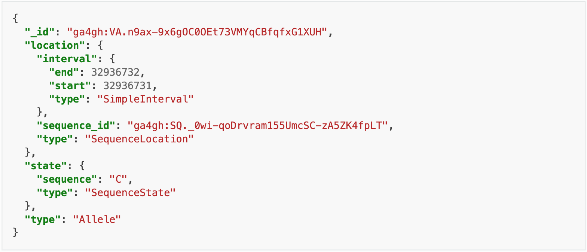
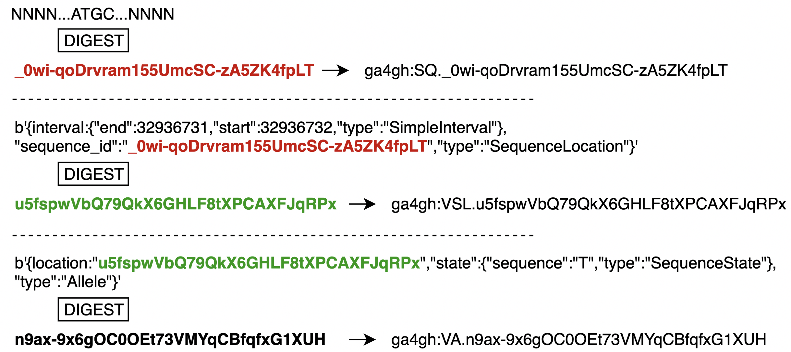

Overview
VR Information Model
One of the main contributions of the vr-spec is an information model which can be used to represent the components of an instance of variation. The objects from the information model included in this tool suite are:
- Sequence - a string, constrained to contain only characters representing IUPAC nucleic acid or amino acid codes.
- SimpleInterval - a range on a Sequence with a single start and end coordinate, possibly with length zero, and specified using Interbase Coordinates.
- SequenceLocation - a contiguous segment of a biological sequence, defined with an Interval and a Sequence.
- SequenceState - a “ref-alt” style variation, including SNVs, MNVs, del, ins, and delins.
- Allele - a State found at a Location.

They are also used to generate computed identifiers (shown below).
VR Computed Identifiers
The following description comes from the specification.
The VR-Spec provides an algorithmic solution to deterministically generate a globally unique identifier from a VR object itself. All valid implementations of the VR Computed Identifier will generate the same identifier when the objects are identical, and will generate different identifiers when they are not. The VR Computed Digest algorithm obviates centralized registration services, allows computational pipelines to generate “private” ids efficiently, and makes it easier for distributed groups to share data.
Continuation of the example from the specification.
These computed identifiers together serve as a globally unique way to represent an instance of variation. They can be used to reliably exchange relevant annotations and other associated variantion knowledge artifacts.